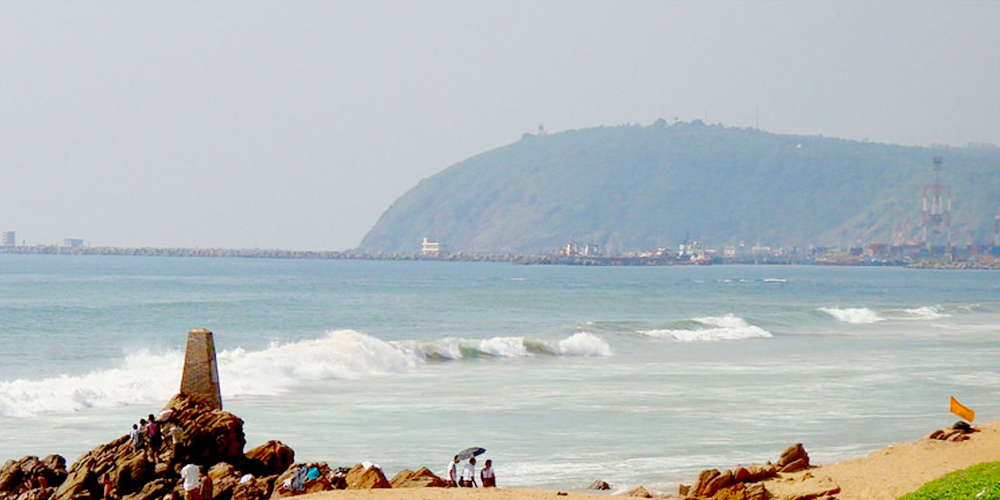

Welcome to Vizag,India
The City of Vizag
The Beauties of Vizag
- Rama Krishna Beach
- INS Kurusura Submarine Museum
- Simhachalam Temple
- Araku Valley
- Dolphin's Nose
Vizag is primarily an industrial city, but also attracts tourists due to its unspoilt sandy beaches, well built and maintained parks, Buddhist Remnant sites and nearby scenic areas, such as Araku Valley. The city has a population of about 2 million. It has beautiful virgin beaches, laterite hillocks, smooth roads and stunning landscape. Health-tourism is a fast developing industry. Visakhapatnam is variously called Jewel on the Coromandel Coast, Steel City, and the City of Destiny.
Rama Krishna Beach

A famous beach popular among locals and tourists alike is the Ramakrishna Beach, named after Ramakrishna Mission ashram located nearby. A perfect place for enjoying fun filled activities such as swimming, sunbathing, surfing and playing beach volleyball, RK beach doesn’t disappoint you. You can also enjoy camel ride or a ride in one of the fishing boats operated by the local fishers here. If not anything, you can simply sit and relax while enjoying the sunset.
INS Kurusura Submarine Museum

Vizag, is a port city, built on the coast of the Bay of Bengal, hence, a submarine museum in the city is of little surprise. Set up in 2011, the museum houses the INS Kurusura that was constructed by Russians in the year 1969, reaching India in 1970. It served the Indian Navy greatly until the year 2001, when it was decommissioned. The submarine has experienced and played a vital role in various wars, including the Indo-Pak war of 1971. It is the first submarine turned museum in Asia.
Simhachalam Temple

The Simhachalam Temple in Visakhapatnam is one of the most popular places to visit. Also known as Sri Varaha Lakshmi Narasimha temple, it is dedicated to the Hindu deity, Vishnu. The legend is that Vishnu, manifested in the form of a half lion and half human form to save his devotee Prahlada from his murder by his own father, Hiranyakashipu. Resembling a fortress from the outside, the temple consists of five gateways and three beautiful courtyards. The temple is a visual representation in the form of architecture of the reign of Kalinga, Chalukyas and Cholas.
Araku Valley

Visakhapatnam is a place where you get to experience a variety of things. While there are ample beaches, waterfalls to explore, there is also no dearth of valleys. One such valley that you should not miss in your Vizag tour is the Araku Valley. Araku is essentially a hill station, situated 120kms away from Visakhapatnam, which is rich in green fields, coffee plantations, picturesque landscapes and most importantly, wonderful weather. The valley is inhabited by tribes and it also contains a museum showcasing some of the best artwork by the localites. The journey to the valley by train is simply breath-taking. A must visit to all!
Dolphin's Nose

TA hill that resembles a dolphin’s nose in its shape is another popular tourist spot in Vizag called the Dolphin’s Nose. There is a lighthouse that guides sailing ships to the port and away from harsh regions of the sea. It was used by the British before the independence of India as a military camp. It is a crucial location because quite a few important wars had been fought in and around the place, such as the war of the British and the French, famously known as the Battle of Visakhapatnam.